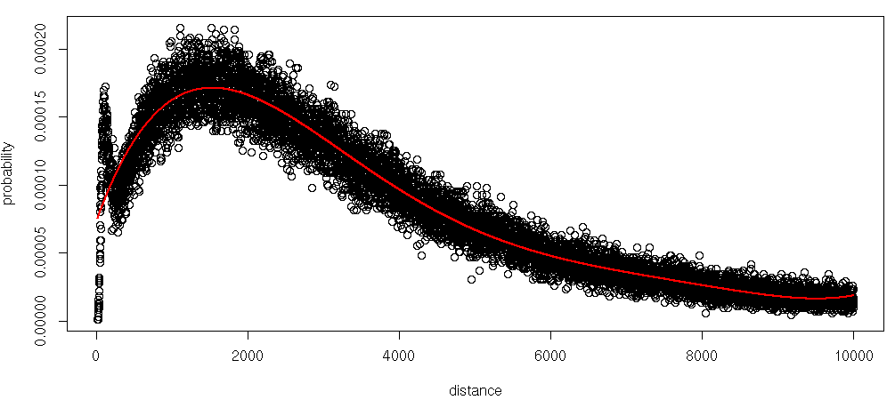
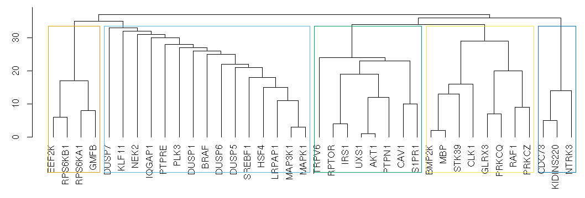

CLL analysis statistics
Number of enhancers per targeted promoter
| Min. | 1st Qu. | Median | Mean | 3rd Qu. | Max. |
|---|
| 0 | 11 | 22 | 24.35 | 36 | 113 |
Number of targeted promoters per enhancer
| Min. | 1st Qu. | Median | Mean | 3rd Qu. | Max. |
|---|
| 1 | 7 | 11 | 14.66 | 18 | 96 |
Enhancer-promoter interactions probability density function
According to the capture Hi-C interactions in 17 human primary blood cell types from (Javierre BM, et al., 2016), we estimated the interactions probabilities with regards to the promoter-enhancer distances as follows:

Representative modules based on edge betweenness
